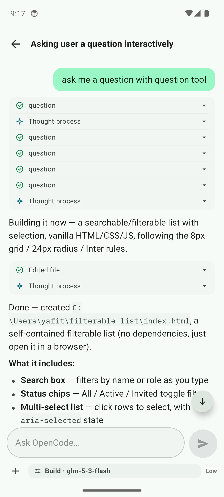
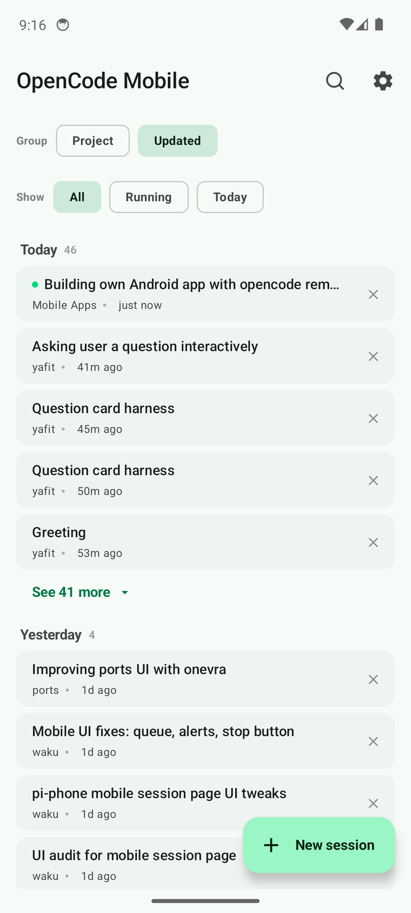
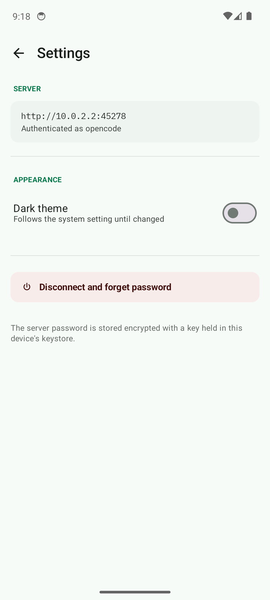

Approve the edit before it lands
A permission request is a card that names the command and the exact pattern that "Always allow" would remember. You see the shape of the permission, not just a yes or no.
OpenCode Mobile is the Android client for the OpenCode server on your own machine. The reply streams in as it is written, and when the agent stops to ask you something, the question arrives on the phone in your hand.

A live turn, one card per step
Four things stop requiring a walk back to the desk. Each one exists because the phone can do it and a terminal window cannot.
A permission request is a card that names the command and the exact pattern that "Always allow" would remember. You see the shape of the permission, not just a yes or no.
The stream keeps running while the app is in the background, so you come back to the answer rather than to a spinner. Long runs stay compact: one panel for every step, with the prose left readable.
When the agent needs a decision the turn stops and waits. The card carries the real choices, so you pick one and the turn carries on from where it paused.
The server password is sealed with AES-256-GCM under a key held in the Android keystore. The key never leaves the device, and the plaintext never reaches disk.
The app is a client, so the server comes first. It takes about a minute, and you only do it once per device.
It prints a URL, a password and a pairing code for this session.
# on the machine that runs the agent
opencode serve --hostname 0.0.0.0 --port 4096Scan the QR and the host and token are set at once, or type the LAN address and password by hand. Codes are good for one use, for five minutes.
Sessions open at the newest turn. Scroll up to page back through history, filter to what is running, or start a new one in a chosen project.
Everything else is either the chat or a sheet that closes. No tabs to learn, no dashboard, nothing to configure twice.


There are no customers to quote, because nobody is a customer. What you can check instead is what the pipeline does on every release.
The release workflow refuses to publish an APK whose version code
disagrees with version.properties, or one that
apksigner will not verify.
See the workflow
The honest answers, including the one about the update that will not install.
Yes. OpenCode Mobile is a client. It talks to an OpenCode server you
run yourself, on a laptop, a desktop or a home machine. Start it with
opencode serve and the app has something to connect to.
Yes, if you expose the server yourself through a tunnel or a VPN. The app only ever talks to the host you give it, so there is nothing in the middle to configure.
It is sealed with AES-256-GCM under a key that lives in the Android keystore and never leaves it. The sealed value sits in app storage, and the password is only sent to your own server as Basic auth over the connection.
No. Every release publishes a signed APK on the Releases page and you sideload it. A store listing would not help an app that is only useful if you already run the server.
The signing key was rotated at 1.0.7, so older builds carry a different certificate and Android refuses the update. Uninstall the old app once, then install normally.
Android 8.0 (API 26) and newer. The app is Kotlin and Jetpack Compose, built against API 36.
No analytics SDK, no crash reporting, no account, no push service. The only network traffic is to the server you configured.
The event feed is live only, so the client does not pretend it can repair a gap. It applies the deltas it has, then refetches the message history when the turn ends or the stream reconnects.
One signed APK, about 24 MB, no account and nothing to sign up for. If the server is up, you are one pairing code away.
Download the APK